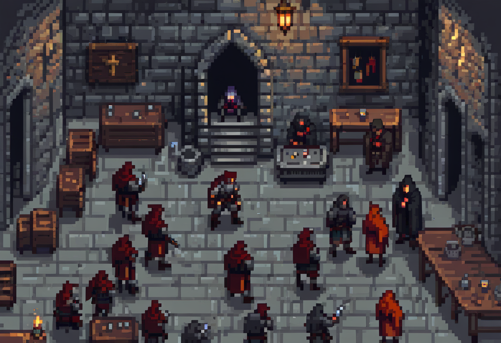

10 Cybercrime, Botnets & Forensics

Many attacks are a business. Understanding who profits, and how, helps explain the choices defenders face.
Many financially motivated attacks involve a market of specialists selling access, malware and services. Understanding that market helps explain why a compromised ordinary device can matter. Other adversaries may seek espionage, disruption or personal harm, so financial incentives are one lens, not a complete threat model.
This chapter uses the malware vocabulary from chapter 2, then concentrates on evidence: what an observation supports, what it merely suggests, and what additional information an investigator would need.
10.1 What this chapter covers
By the end you should be able to:
- Explain what a botnet is, and how one is built and monetised.
- Describe the cybercrime economy: the division of labour behind modern attacks.
- Explain, at a high level, how a real botnet works (credential-stealing and IoT examples).
- Connect forensic traces to the attribution of an attack, and explain chain of custody.
10.2 Cybercrime is a business
The single most useful shift in thinking is to treat serious cybercrime as commerce. Attackers have costs, revenues, competitors, and customers. They reinvest profits, offer support, build reputations, and specialise. Specialisation is more efficient, just as in any legitimate economy. Cryptocurrency can help move value across borders, but public-ledger transactions may also provide an investigative trail. Traceability depends on the system and available evidence. The result is a mature underground market where almost any capability can be bought.
Seeing crime as business reframes defence. You don’t have to make an attack impossible. For opportunistic profit-driven attacks, raising costs and reducing returns can discourage targeting. That does not guarantee deterrence. Raise the attacker’s cost, lower their expected return, and much of the volume moves to an easier target. A great deal of security is about not being the cheapest victim on the market.
10.3 The division of labour
The defining feature of the modern cybercrime economy is that participants can specialise rather than doing the whole job. The work is split among specialists, each selling to the next. Malware developers write and sell the tools, often as polished kits with updates and customer support. Initial access brokers specialise in breaking in, then sell the foothold, access to an already-compromised company, to whoever wants to use it. Infrastructure providers rent out “bulletproof” hosting and the command servers that run attacks. Ransomware-as-a-service operators lease their ransomware to affiliates, who run the attacks and hand back a cut. Money mules and launderers turn stolen funds into clean, spendable cash.
This specialisation has three consequences, and they explain why cybercrime is so stubborn. It lowers the barrier to entry: you no longer need to be a skilled hacker to launch an attack, you can rent the capability. It makes the ecosystem resilient: arrest one malware author and the access brokers, hosts, and launderers all carry on, and a competitor fills the gap. And it muddies attribution: with so many hands touching an attack, working out who is responsible is hard. A disruption may leave other participants able to rebuild or reuse parts of the operation.
10.4 Botnets: crime at scale
Chapter 2 introduced a botnet: compromised devices under remote control through a command-and-control channel. Here the important distinction is between a device’s own data and its value as infrastructure. A device can supply traffic, computing capacity or a relay even when its owner believes it has nothing worth stealing.
A single device can still be valuable, for example because of its accounts or network position. Scale adds other uses such as distributed denial of service. A defender should consider both individual compromise and the harm a fleet can cause to others.
10.5 How they work: two patterns
Two well-known cases show the pattern without needing any perishable statistics.
Gameover Zeus, a member of the Zeus family, was used for credential theft and fraud. The FBI’s 2014 account of its disruption shows why a response can involve investigators, service providers and affected device owners. Disrupting infrastructure and cleaning infected devices are different parts of the work.
Mirai recruited internet-connected devices, including cameras and routers, using weak or default credentials. The US Department of Justice’s account of the 2017 guilty pleas provides a historical source. For a defender, unmanaged devices and default credentials belong in the asset inventory even when their owners do not think of them as computers.
10.6 Following the trail: forensics and attribution
When an attack succeeds, the work shifts to investigation: digital forensics, the discipline of reconstructing what happened from the traces left behind. And attackers leave more traces than they’d like. System and network logs may record activity. File timestamps and document metadata can suggest a sequence, but can be modified. Some email headers are trustworthy only as far as the systems that added them; sender-supplied fields can be forged. Check clock offsets, collection context and corroborating observations. From fragments like these an investigator builds a timeline: a defensible account of who did what, and when.
Two ideas make forensics a discipline rather than a rummage. The first is chain of custody: evidence handling should make integrity and provenance open to examination: who touched it, when, and how, in an unbroken record. Poor handling can undermine confidence and admissibility. A digest shows whether a captured item changed relative to a recorded value; it does not prove the original item was truthful or identify its author. (This is the hard lesson the game module makes you feel.) The second is that attribution is difficult. The same division of labour and the same botnets that power attacks also hide the people behind them: traffic routed through a botnet appears to come from innocent victims, infrastructure is rented and disposable, and false clues are sometimes planted deliberately. Careful defenders talk about attribution in terms of confidence, not certainty.
Choose the next investigative step for its relevance and reliability, not because one kind of trace is always the clue attackers forget. Preserve the supplied material and document collection, access and interpretation. Investigation supports containment and recovery as well as later attribution; it need not wait until systems are restored. NIST’s incident-response guidance provides the wider operational context.
Incident Zero’s Forensics module has you chase attribution and rebuild a timeline while protecting the chain of custody. Mishandle the evidence trail and you lose the case, even when you know who did it. → incidentzero.retroverse.studio
10.7 Where this connects
This chapter connects to several others. Software security & malware supplies the weapons this economy trades in: the trojans, worms, and ransomware from that chapter. Network security matters because a botnet’s command-and-control and DDoS traffic are what network monitoring exists to spot. Forensics supports the containment and recovery decisions in incident and disaster planning, as well as subsequent review.
10.8 Questions to consider
- Why is a botnet so much more valuable to a criminal than a single compromised machine?
- Modern cybercrime has a “division of labour”: different people write malware, sell access, rent servers, and cash out. Why does that specialisation make attacks so hard to stop?
- Choose one trace from Harbour’s evidence cards. What does it support, what can it not establish, and what would you check next?
10.9 Annotate an evidence trail
In 15 minutes, annotate Harbour’s evidence cards as observation, inference or unknown. Explain what supports concern about an export and why an account name is not an actor identity. Write a handling record with collector, time, item, digest reference and access history. Success means a defensible timeline with uncertainty visible, not a confident name to blame.
Case inputs and checks: Harbour dossier.